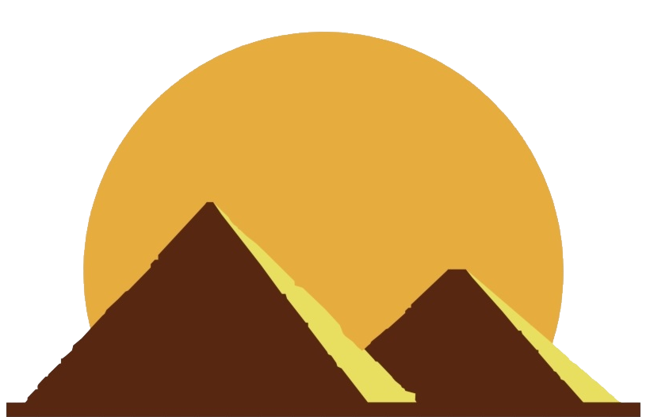
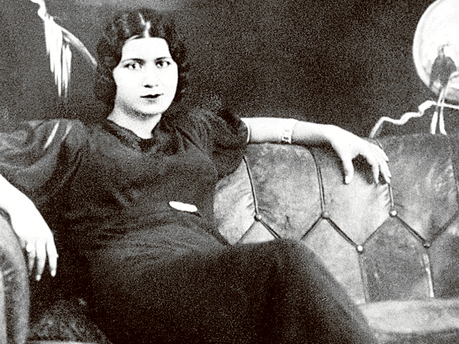

دفترچه خاطرات من در سفر قاهره
غذاها،نوشیدنی ها،عروسی،خطرات حاشیه اهرام،کرکودیل های نیل و ...
هر روز با جدیدترین اتفاقات قاهره :)
عضویت در خبرنامه فارسی قاهره

خاطرات من در سال 2022
عکس های سلفی با کرکودیل پیر
بازداشت شدن به هنگام دزدی از هرم خوفو
فروش عتقیه جاتی که از اصفهان با خود داشتم
گم شدن هنگام سافاری صحرایی
خریدن خانه رویایی خودم با ویوی رود نیل
دعوت دوستان و فامیل برای تعطیلات عید نوروز
تدریس زبان انگلیسی به شاگردای کوچولوی مصری
گیر کردن در ایستگاه متروی قاهره
اخراج از محل کار به دلیل طرفداری از سیاست مرسی
آخرین نوشته هام..
نرخ کرایه شتر قاهره از کرایه قاطر دماوند کمتره
نکاتی که قبل سفر به مصر باید رعایت کنید.
لباس های مناسب برای سفر در هر فصل از سال.
همه چیزی که باید درباره سفر به اهرام بدانید.
محدودیت های خاص ایرانیان برای سفر به مصر
راه های سفر ارزان و معرفی متل های شهر قاهره
چگونه در صحرا دزدیده نشویم.
نحوه ارتباط با مردم محلی در قاهره
وضعیت اقتصادی قاهره
بهترین سوغاتی های مصری
کلاب های قاهره مخصوص توریست ها
مقایسه وضعیت زندگی در قاهره و تهران
صرافی های مطمئن در قاهره و حومه
آخرین مقاله سایت..

درباره ام کلثوم ملکه آواز مصر چیزی میدونی؟
فرشته موسیقی مصر و از بزرگترین خوانندگان موسیقی عربی در زمان خودش بوده.یکی از نکات مهمی که اینجا در مصر باعص شده همه عاشقش باشن اینه که میگن اون تنها خواننده ای بوده که شب اجرای کنسرتش ثروتمند ترین زن عرب بوده و فردای اون شب فقیر ترین خواننده عرب. دلیلش هم کمک بسیار زیادش به فقرا و نیازمندان بوده و به همین علت اینجا مادر هم صداش می کنند. [بیشتر بخوانید...]